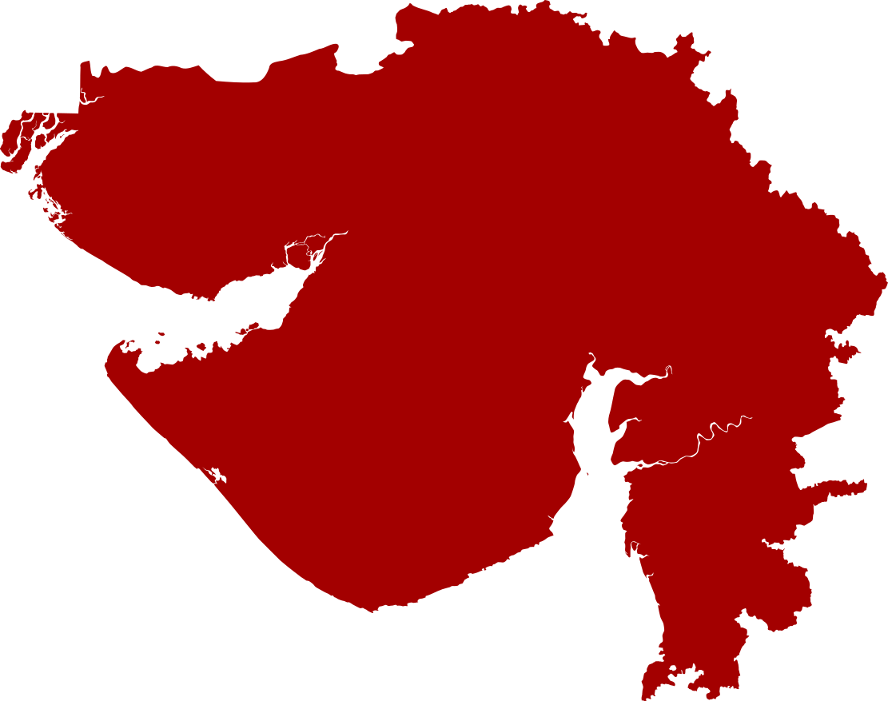

ગુજરાત દર્શન
નકશા પર કોઈપણ શહેર પર ક્લિક કરો

ભુજ
દ્વારકા
પોરબંદર
જામનગર
રાજકોટ
જૂનાગઢ
સોમનાથ
ભાવનગર
અમદાવાદ
ગાંધીનગર
વડોદરા
સુરત
Map By Chumwa and KCVelaga (CC BY-SA 4.0) | Wikimedia Commons
Coordinates digitally mapped for accuracy.
← નકશા પર પાછા
જોવા લાયક સ્થળો (6)
વાનગીઓ (6)
સંસ્કૃતિ (6)